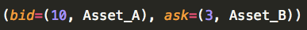

Raiden Network
Lefteris Karapetsas
Berlin Ethereum Meetup
01/11/2016
Open Ethereum Problems
- Scalability
- Transaction Finality
- Transaction Privacy
A Possible Solution
Off-chain transfers: Distributed State and Computation via bilateral transfers
The Blockchain: Replicated ledger for computations
What is the Raiden Network
- Offchain Asset Transfer Network
- Similar to the Bitcoin Lightning Network
- Developed by Brainbot AG
- Under Development, working towards an MVP

Raiden Features
- Compatible with ERC20 Standard Token ABI
- Instant Asset Transfers
- Micropayments
- Has potential to scale to even 1 million transactions per second.
- Transactions are confidential
How Does It work?
By utilizing something called payment channels.
Payment Channel
Comprised of a smart contract that:
- Has a Security Deposit
- Channel can be closed by any party
- Channel settlement with challenge period
Payment Channel
All balances are updated off-chain.
Bidirectional Channel
- Two deposits
- Settlement is comprised of two netted balances
- Each participant tracks both balances
Chaining Channels
- Transfers between not connected parties can be mediated
- Through using hashlocks there is no trust required.
- Secret revealed once A learns, that C signed for D
- Each node can charge a small fee
Network of channels
- Routes between any two participants
- Channels can be long lived, since transfers cancel out
- Low Frequency of on-chain settlements.
- Vast Majority of Transactions off-chain:
- Cheaper (no gas costs)
- Fast (no need to deal with the chain)
- Maintain no counterparty risk
Example: Decentralized Exchange
- Need a channel open for both assets
Exchange intent is broadcast by the initiator

- Interested parties send an Exchange Request
- Initiator accepts
2 Transfers with 1 Hashlock
Once the initiator accepts then:
- Two mediated transfers with the same Hashlock
- Either both or none executes
Comparison with the Lightning Network
- Easier implementation thanks to Ethereum's EVM
- Uncooperative participants don’t lock the channel
- Funds can be added to existing channels
- Works with any ERC20 compatible token
- Interopable with smart contracts
Project Status
- Can be implemented with current version of Ethereum.
- Demonstrated 500 transfers per CPU core per second.
- Is a work in progress.
Project Status
Current milestone is POC-0.
Project Status
We are heading towards an MVP of Raiden, with the milestone coming out beginning of 2017.
Do you like python coding and love Ethereum?
Help is really appreciated: https://github.com/raiden-network/raiden/
Thank you
Any questions?
For more updates follow me in Twitter/Github:
@lefterisjp